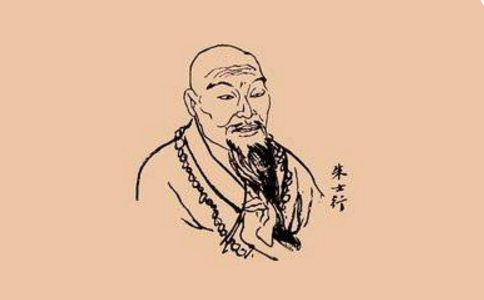
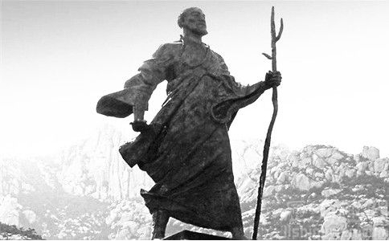

在世界历史上，有这么一群人，他们在长达几个世纪的时间里，为了同一个目标而前赴后继——他们翻越雪山、横穿大漠、远渡重洋，他们以信念支撑起万里之行，他们用生命绽放出最美的红莲。他们就是西行取经的中国僧人。
朱士行：第一位西行取经求法的僧人
因为一部《
公元260年，三国争霸的硝烟仍在弥漫。朱士行，中国第一位正式受
朱士行一路向西抵达西域于阗国。于阗是崇尚
朱士行可能不是第一位踏上这条取经之路的，但他是第一位成功取回了

历史犹如滚滚的车轮，在不断轮回中前行。
公元399年，又是一个战乱的年代，又有一位年近六旬的老人义无反顾踏上取经之路，他就是东晋高僧法显大师。
大师横穿西域，翻越葱岭，成为了第一位踏入天竺的中国人。随后在天竺游历九年，遍寻圣迹，于412年携带十一部经律从海路返回。
大师回国后撰写《佛国记》一卷，详细记录了取经的行程及路途中的见闻。这一珍贵的著作不仅激励了更多后人投身取经事业，也为西行取经的僧人们提供了详实的第一手资料，成为取经路上的重要参考。
玄奘大师：西行五万里，带回经论657部“宁向西天一步死，不向东土半步生。”这是玄奘大师取经路上的豪言壮语。历史上真实的玄奘大师，并非《西游记》里那胆小懦弱的唐僧。大师没有四位徒弟一路同行，更没有与唐太宗结拜兄弟，甚至是混在难民群里“偷渡”出国的。
大师的西行之路远不止九九八十一难，才刚上路就险些被大唐官府抓回；穿越八百里大漠时，因水袋打翻，大师五天四夜滴水未进；抵达高昌后，高昌王极力劝留，大师绝食三日终将其打动；两次翻越雪山，险死还生。除此之外，大师还数次遭遇强盗洗劫，被视为异教徒驱散，甚至被信奉突伽天神的
大师一路行来，耗时17年，行程五万余里，带回经卷共计657部。
义净法师：游历天竺十余载晋宋齐梁唐代间，高僧求法离长安。
去人成百归无十，后者焉知前者难！
路远碧天唯冷结，沙河遮日力疲殚。
后贤若不谙斯旨，往往将经容易看。
这首《题取经诗》的作者，是在取经路上与法显、玄奘齐名的唐朝高僧义净法师。义净法师游历天竺十余载，搜集大量取经僧人的资料，编写《大唐西域求法高僧传》，记录了56位西行求法高僧的行谊。上面这首诗可说是法师一路行来发自肺腑的心声。
总结 “晋宋齐梁唐代间，高僧求法离长安。”自魏晋以来，多少高僧大德怀揣着济世悲心踏上远途，多少
法显大师先后与十位僧人同行，最终只身一人返回。昙无竭一行25人出发，归来者仅仅5人。更有令人动容者，如常慜法师师徒二人，在沉船危难之际，主动将乘小船逃生的机会让与他人，“可载余人，我不去也！”师徒二人合掌面西，在弥陀圣号中葬身海底……
除此之外，还有更多的高僧连名字也未曾留下，他们留下的，只是一堆白骨，为后来的取经僧人们指明道路，正
“地上本没有路，走的人多了，也便成了路。”取经之路是对这句话的完美诠释，这是一条历代高僧用鲜血与白骨铺就而成的死亡之路，也是一条见证了高僧们不畏艰险舍身求法的新生之路。
“后贤若不谙斯旨，往往将经容易看。”一千多年后的我们，已经很难想象当时的高僧们为取经所付出的一切。也许只有了解了这一段取经的历史，才能体会
我们现在觉得阅读佛经很容易，要知道，那是无数的高僧用生命换来的。借用一句流行语来说，哪有什么岁月静好，不过是有人替你负重前行。
当你随手翻开一本佛经时，请记住，今天的容易来之不易。当你在电脑上点开一部讲经视频时，请记住，今天的容易来之不易。当你在手机上点开一款佛教电子书时，请记住，今天的容易来之不易。
原文标题：有一条路，叫做取经之路
文章转自微信公众号：